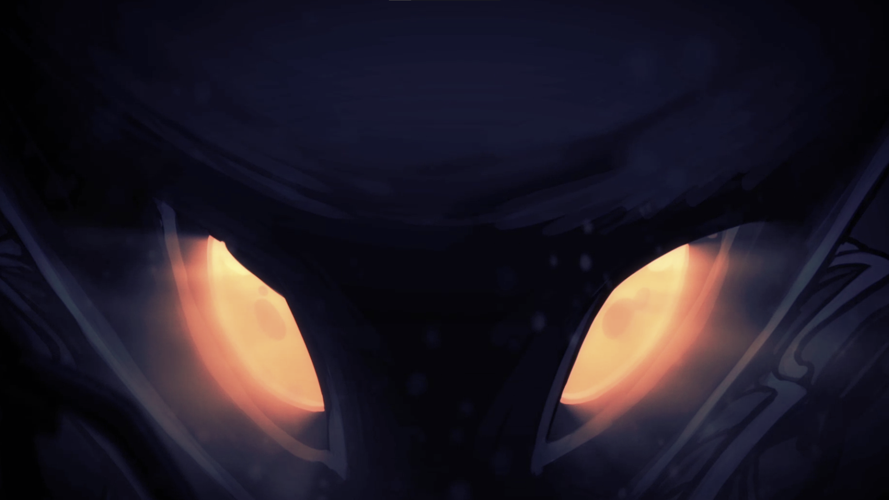
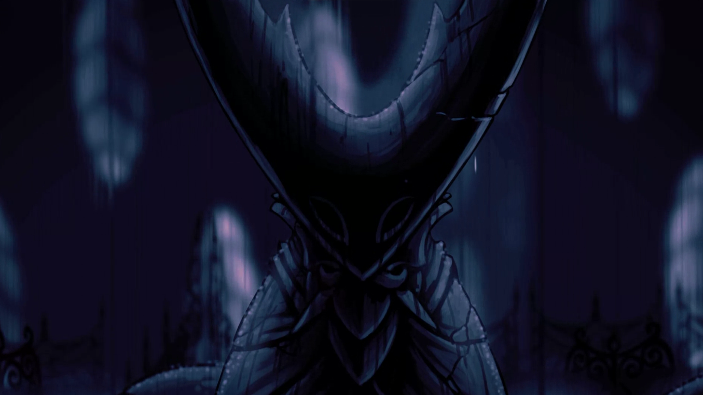
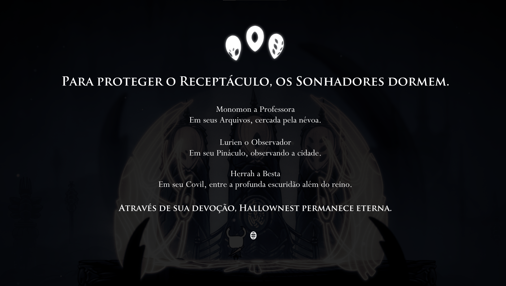

- PC
- Mac
- Linux
- Playstation 4
- Nintendo Switch
- Xbox One
Hollow Knight é um jogo do estilo metroidvania inspirado em jogos clássicos como Metroid e na ambientação de Dark Souls, trazendo o melhor dos dois jogos.
Hollow Knight é um jogo do estilo metroidvania inspirado em jogos clássicos como Metroid e na ambientação de Dark Souls, trazendo o melhor dos dois jogos.
Hollow Knight é um jogo do estilo metroidvania inspirado em jogos clássicos como Metroid e na ambientação de Dark Souls, trazendo o melhor dos dois jogos.
Hollow Knight é um jogo do estilo metroidvania inspirado em jogos clássicos como Metroid e na ambientação de Dark Souls, trazendo o melhor dos dois jogos.
Personagens Importantes
Personagem 1

Personagem 2
Personagem 3
Comentários
a
a
a